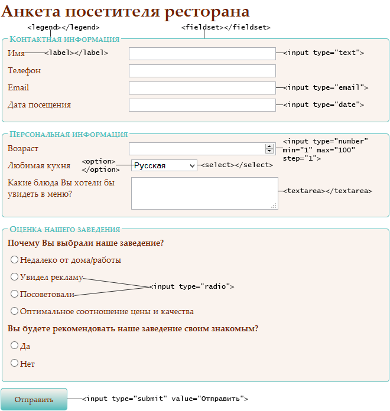

В современном мире веб-технологии пронизывают все сферы жизни: от образования и медицины до бизнеса и развлечений. Каждая компания, организация или частный специалист стремится иметь собственный сайт или веб-приложение.
HTML и CSS — это основа любого сайта, а JavaScript добавляет интерактивность и «жизнь» веб-страницам.
Работа над собственными сайтами (лендинг, портфолио, интернет-магазин) помогает развить творческие способности, дизайнерское мышление и навыки решения практических задач.
Знакомимся с курсом, узнаём, как работает интернет, что такое клиент и сервер, разбираемся с браузером и его DevTools, устанавливаем VS Code и учимся работать с LiveServer.
Задача: собрать свою первую тестовую страницу из фрагментов кода из презентации.
1. Установите VS Code.
2. Установите расширение LiveServer.
3. Создайте файл index.html и запишите в нём
HTML-код из презентации.
4. Добавьте CSS-стили из презентации в тег
<style>.
5. Добавьте JavaScript-код из презентации в тег
<script>.
6. Запустите страницу через LiveServer.
7. Откройте DevTools (F12) и изучите вкладки Elements, Console и Network.
Изучаем историю HTML, базовую структуру документа, заголовки h1–h6, параграфы и теги форматирования текста.
Задача: создать страницу-визитку с использованием заголовков разных уровней и форматированного текста.
Требования к странице:
index.html с правильной структурой
документа.
<h1>) с
вашим именем или названием визитки.
<h2>, <h3>) для
разделов: «Обо мне», «Мои навыки», «Контакты».
<p>) с
информацией о себе.
<strong> (жирный),
<em> (курсив),
<br> (перенос строки).
<hr> между
разделами.
Учимся создавать гиперссылки, разбираемся с абсолютными и относительными путями, делаем якоря для навигации внутри страницы.
Задача: создать навигационное меню с переходами между несколькими HTML-страницами.
Требования к проекту:
site с тремя HTML-файлами:
index.html — главная страницаabout.html — страница «О себе»contact.html — страница «Контакты»index.html в браузере.
Дополнительное задание:
Учимся вставлять изображения на веб-страницы, разбираемся с
атрибутами
src, alt, width,
height
и выбираем правильные форматы для разных задач.
Задача: создать галерею изображений с использованием разных форматов и правильным альтернативным текстом.
Требования к странице:
gallery.html с правильной
структурой.
<h1> «Моя галерея
изображений».
alt.width и height.
Дополнительное задание:
loading="lazy" к изображениям,
чтобы они загружались только при прокрутке.
Учимся создавать маркированные и нумерованные списки, в том числе вложенные, а также осваиваем таблицы: заголовки, объединение ячеек, подписи.
Учимся создавать формы: изучаем тег <form>,
элементы ввода (<input>,
<textarea>, <select>,
<button>) и методы отправки данных GET и POST.
Задача: создайте HTML-файл, результат которого
показан на слайде. При клике на кнопку «Отправить» происходит
отправка данных на сервер методом POST.

Используйте изученные элементы: <form>,
<fieldset>, <legend>,
<label>, <input> (типы
text, tel, email, date, number, radio, submit),
<select> и <option>,
<textarea>.
Разбираемся, чем семантическая вёрстка отличается от вёрстки на
<div>, изучаем теги
<header>, <nav>,
<main>, <section>,
<article>, <aside>,
<footer> и узнаём, как семантика помогает
доступности (a11y) и SEO.
Задача: переведите страницу, написанную на
<div>, на семантически правильные теги.
Ниже — готовая страница с разметкой на «дивах». Скопируйте её в
файл
semantic.html и замените контейнеры на
семантические теги: <header>,
<nav>, <main>,
<section>, <article>,
<aside>, <footer>.
Сохраните структуру и внешний вид страницы.
Исходный код страницы:
<!DOCTYPE html>
<html lang="ru">
<head>
<meta charset="UTF-8">
<title>Мой блог</title>
</head>
<body>
<div class="header">
<h1>Мой блог о веб-разработке</h1>
<div class="nav">
<ul>
<li><a href="#">Главная</a></li>
<li><a href="#">Статьи</a></li>
<li><a href="#">Обо мне</a></li>
<li><a href="#">Контакты</a></li>
</ul>
</div>
</div>
<div class="main">
<div class="article">
<h2>Как я начал изучать HTML</h2>
<p>Первые шаги в веб-разработке всегда даются непросто...</p>
</div>
<div class="article">
<h2>Зачем нужен CSS</h2>
<p>CSS позволяет отделить содержание от оформления...</p>
</div>
</div>
<div class="sidebar">
<h3>Технологии</h3>
<ul>
<li>HTML</li>
<li>CSS</li>
<li>JavaScript</li>
</ul>
</div>
<div class="footer">
<p>© 2026 Мой блог</p>
</div>
</body>
</html>Задача: добавьте к странице из предыдущего задания атрибуты доступности и исследуйте её через DevTools.
Что нужно сделать:
semantic.html в браузере и
нажмите F12, чтобы открыть DevTools.
aria-label="Основная навигация", чтобы скринридер
понимал назначение меню.
alt.
Задача: сверстайте страницу, заточенную под использование правил доступности.
Техническое задание:
Создайте страницу accessible.html — форму записи на
курс «Основы вёрстки». Страница должна содержать:
<header>) с
заголовком <h1> «Запись на курс» и кратким
описанием курса.
<nav>) с
якорными ссылками на разделы страницы. У навигации должен быть
aria-label.
<main>):
<section>) с текстом
и одним изображением (например, логотип курса). У
изображения — осмысленный
alt.
<section>) с
маркированным списком изучаемых тем.
<section>) с
формой, содержащей:
type="text") — обязательно
(required), связано с
<label>.
type="email") —
обязательно, связано с <label>.
type="tel") —
необязательно, связано с <label>.
type="radio")
«Уровень подготовки» (начинающий / продолжающий) с
общей подписью через
<fieldset> и
<legend>.
<label>.
type="submit").
<footer>) с
копирайтом и контактной информацией.
Требования доступности:
<label> через
for и id.
required и подсказка
о формате через aria-describedby.
<fieldset> и <legend>.
alt.
Учимся встраивать на страницу видео и аудио с помощью тегов
<video> и <audio>, а также
использовать тег <iframe> для вставки внешнего
контента (видео с видеохостингов, интерактивные карты).
Задача: создайте рекламную страницу заведения на выбор (кафе, кинотеатр, спортзал, музей и т.д.). Страница должна содержать информацию о заведении и обязательно включать встроенное видео и карту с адресом.
Требования к странице:
<h1> с названием
заведения и небольшим текстом-описанием (чем занимается, что
предлагает).
<video> с атрибутами controls,
width, height и/или добавьте
poster (картинку-заставку). Если видео нет, можно
использовать встроенное видео с видеохостинга через
<iframe>.
<iframe> (используйте сервис Яндекс.Карт
или Google Maps, получив embed-код).
title или aria-label для
доступности.
Определяем интересы и склонности в сфере веб-разработки, знакомимся с профессиями.
Знакомимся с реальными задачами начинающего верстальщика и пробуем свои силы в выполнении тестового задания: переводим макет документа в семантически правильный HTML-код.
Задача: выполните тестовое задание для начинающего верстальщика — переведите предложенный документ в HTML-страницу.
Обратите внимание на требования: аккуратный и
чистый HTML-код, валидность, семантически правильные теги
(ссылки — это <a>, списки —
<ul> или <ol>), цитата для
выделенного текста, заголовки в соответствии с их уровнем.
🎨 Раздел CSS появится позже. Будем изучать селекторы, цвета, шрифты, Flexbox, Grid и адаптивную вёрстку.
⚡ Раздел JavaScript в разработке. Переменные, условия, циклы, события — всё, чтобы добавить жизнь на сайт.
💡 Здесь будут материалы по итоговому проекту: выбор темы, требования, примеры работ прошлых лет.